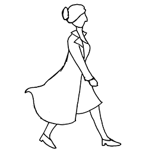
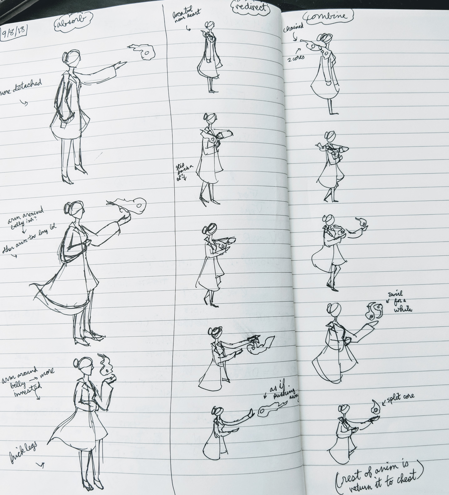
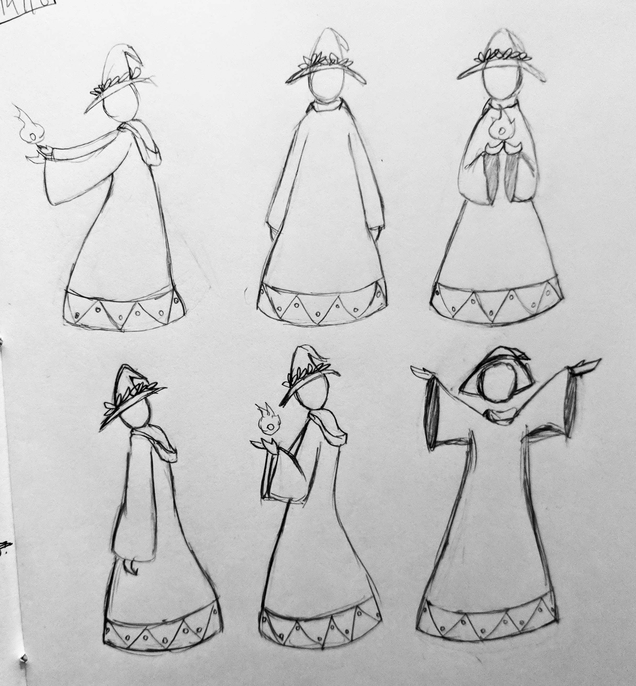
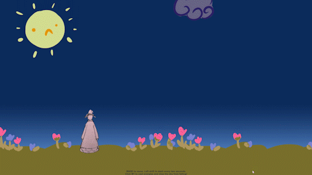
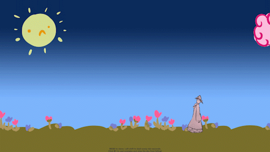
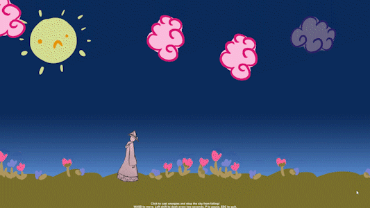
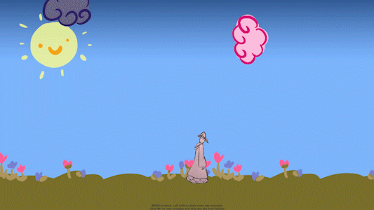

The Assignment

Try out the latest version here! The feedback form is available here.
This game prototype is still in progress, being developed for the Fall 2018 iteration of Art 178, "Game Design Methods." Our given assigment was to create a novel fun loop - something simple, short, and satisfying that can be done over and over again.
The game began rather differently than I originally imagined. An earlier assignment had been to design and animate a walk cycle for a character from a short story we had read (The Evening and the Morning and the Night by Octavia Butler). I chose to illustrate the doctor Beatrice who worked with patients to redirect their violent impulses into creative outlets, such that, rather than hurting themselves or others, they create great works instead. The resulting walk cycle can be seen to the left.
Sketching the Fun Loop

This provides context for the initial design of the fun loop, with sketches seen to the right. The character design still draws from the original walk cycle. However, rather than deal with doctors directly, the challenge of creating a novel fun loop inspired me to think metaphorically - instead of directly interacting with patients, what if our doctor could literally absorb their energy, transform it, and redirect it for new uses? This can be seen in the "storyboards" of each action, Absorb, Redirect, and Combine.
She becomes a witch or magician of sorts, in tune with the energy of living things and able to bend it toward productive means. The fun loop would then be absorbing energies from the environment, holding onto them and/or combining them, and then recasting these energies to interact with the environment again.
Iterating on Character Design

The task then became to implement this fun loop within a week, including all art assets and code. Given the time constraint, the original doctor design was scrapped to become simpler and more archetypally "wizardly" (though gender neutral) for ease of animation. The idea of being in tune with living things made the design drift closer to something vaguely druidic, inspiring the current aesthetic. These sprites, with a little post-processing, can be seen in the current prototype.
First Iteration

After a great deal of implemenation and experimentation, we reached a first build. But as the gif to the right suggests, the gameplay hardly resembles the concept of "absorbing" energies - instead, it focuses on casting fire spells to bounce around clouds. What happened?
Indeed, the original loop would be that player would "absorb" energies one by one, store them on their person, and then throw them up at falling obstacles to destroy them. However, one night, as the night grew very very late, I couldn't solve an issue with trigger/collision detection, such that the player would correctly detect when they could absorb a floating energy. However, some other interaction caught my eye.
I was already implementing the clouds falling from the sky, and I had already made it possible for the player to generate a fiery energy and throw it up. I couldn't get the player to pick up the energies I spawned on the ground, but I did notice that when the fire would collide with the falling clouds, the clouds would topple over and rotate and bump into each other in a terribly silly manner, and it made me giggle. So then I thought... what if that was just the game? Juggling a bunch of clouds, despite their odd physics, to keep them from falling? Then, whip up a quick background and a cute sun to complement the lighthearted aesthetic, and we have our first iteration.
Second Iteration


After a play-testing period during class, I received a lot of productive feedback. My classmates and my professor felt the mood I was trying to set - it made them smile! Between the lofty casting animation and bouncing around colored clouds, the game loop engaged people. I learned to keep drawing on this cheery, cartoony aesthetic. However, as my professor noted, the fun loop lacked significance without any game state. The trick would then be implementing new, thematically fitting features.
I decided to continue building upon this metaphor of battling gloomy clouds with a bit of brightness. To make things more challenging yet fair, I tweaked the respawn rates and locations of the clouds such that they would spawn regularly and semi-randomly, but always from above off-screen and never in the middle of the screen as before. Moreover, since we were using magicks to push around clouds, why shouldn't this magic make dreary clouds look cheery? Instead of randomly spawning blue and pink clouds, I added a mechanic that transformed blue clouds into pink clouds once they've been touched by magic.
Most noticeably, the initial background has gotten darker. This is because the most important new game state is this dark "gloom" hanging around in the sky. Whenever a user bounces clouds away without them touching the ground, the gloom starts to lift up. On the other hand, if the user drops clouds on the ground, then the gloom starts to fall down again. And, since people liked the bobbing sun so much, I made it react to the current game state - as seen in the second gif in this section, if the gloom lifts away enough, the sun starts to smile again!
Third Iteration


I performed another round of playtesting, this time primarily with friends, not only by sending download links to the executable as well as a feedback form, but also by setting down my computer before someone and pestering them to try it out.
One thing I noticed during a live playtest was that it took one of my friends a decent while to realize what caused the gloom to rise - he didn't seem to immediately grasp that the goal was to push the clouds to the side, rather than simply struggle futilely to never drop any clouds ever. In reaction to this, I decided to add particle "sprays" that spawned whenever clouds despawned either from the sides of the screen or from the bottom of the screen. If the cloud despawned on the sides, a bright yellow particle burst would appear to encourage this behavior. If the cloud fell through to the bottom, a dark blue burst would spawn, indicating an undesirable outcome. This is all in addition to the gloom moving up and down on the screen. Together, this seemed to clue people into how to best juggle the clouds around.
Seen in the second gif, another feature I included from my own playtesting is a small horizontal dash every two seconds because, every now and then, it would feel impossible to catch up to a cloud that had just spawned on the opposite side of the screen. The dash provides a new mechanic that players can use to better deal with the demands of the game's timing.
Future Directions
There are a number of areas of improvement with the current iteration of the game, some of which come to mind immediately:
- There is plenty of room for further progression in the game - perhaps more falling obstacles that behave differently and/or must be handled differently.
- The game's difficulty curve is fairly arbitrary right now, since the clouds' spawn rates simply increase linearly - the timing could definitely be tweaked to provide a clearer and fairer sense of progression.
- We could implement a fail state in the game, though I enjoy the "endless" nature of it so perhaps not an explicit win state.
- The dash could use more iteration to feel smoother and less jarring. It could also use a visual indication of when the two-second cooldown ends.
- The particle sprays don't fully suit the current art style, so their appearance could be improved.
- The player sprites should get more fleshed out animations, rather than the current 1-2 keyframes.
- The player sprites should be redone digitally so they appear more consistent and better fit the art style.
- We could experiment with a power-up system that has various effects on how the obstacles spawn or how the player behaves.
- We could experiment with giving the player more types of projectiles/magicks.
There are also plenty of issues that could come out in further playtesting and/or analytical methods. For example, we could try to approach the cloud spawns mathematically, examining the respawn rates with various equations and graphs. The prototype has a fair amount going for it at this point, and through more analysis and more iteration, we can discover what else is necessary and what else is possible, all while maintaining its uplifting mood.